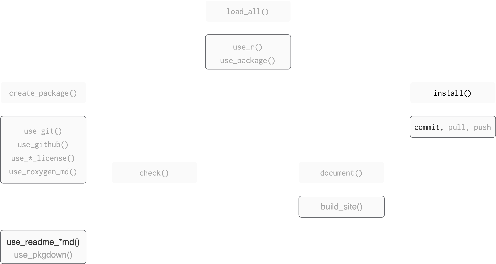
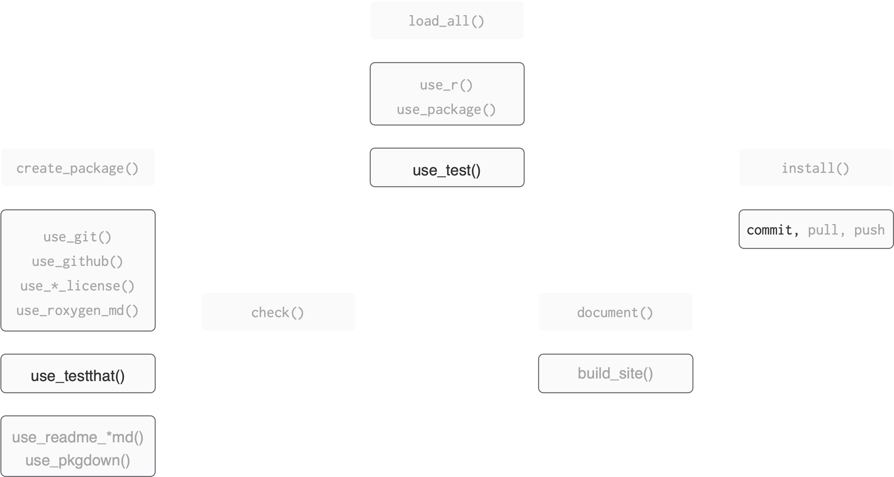
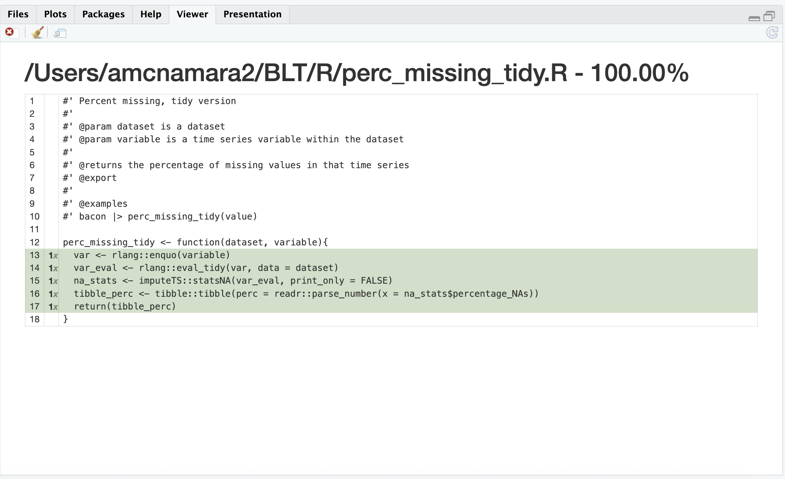
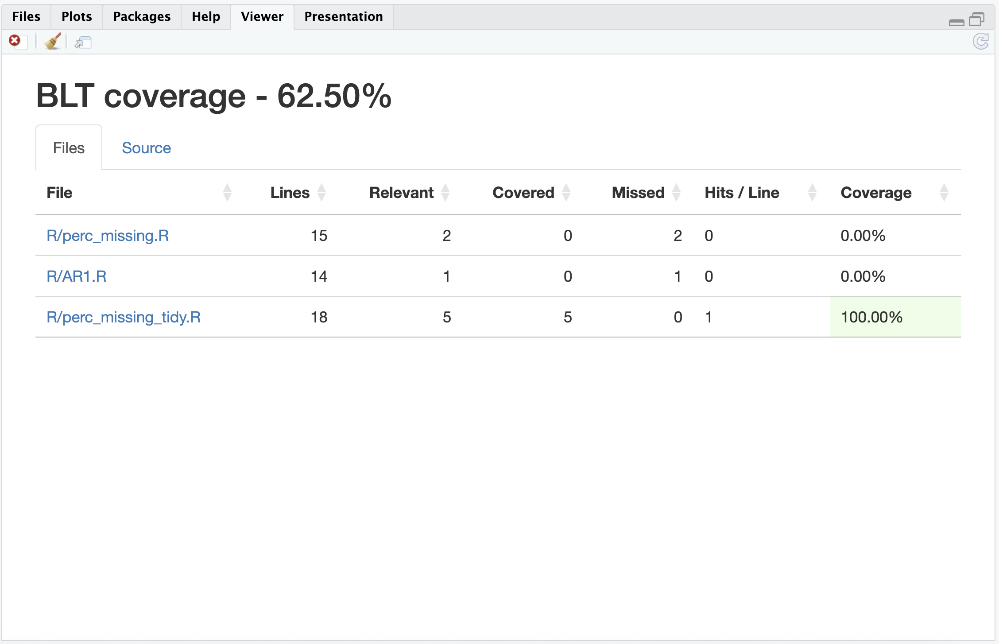

💻 🏦
Code You Can Bank On
Testing
Amelia McNamara
Where we left off
Figure adapted from Packages, by Hannah Frick
BLT ├── BLT.Rproj ├── DESCRIPTION ├── NAMESPACE ├── R │ ├── AR1.R │ ├── BLT-package.R │ ├── data.R │ ├── perc_missing.R │ └── perc_missing_tidy.R ├── README.Rmd ├── README.md ├── data │ ├── bacon.rda │ ├── lettuce.rda │ └── tomatoes.rda ├── man │ ├── AR1.Rd │ ├── BLT-package.Rd │ ├── bacon.Rd │ ├── figures │ │ └── README-pressure-1.png │ ├── perc_missing.Rd │ └── perc_missing_tidy.Rd └── vignettes ├── BLT.Rmd └── BLT.html
unchanged
changed
changed by you
Where we’re heading

Figure adapted from Packages, by Hannah Frick
BLT ├── BLT.Rproj ├── DESCRIPTION ├── NAMESPACE ├── R │ ├── AR1.R │ ├── BLT-package.R │ ├── data.R │ ├── perc_missing.R │ └── perc_missing_tidy.R ├── README.Rmd ├── README.md ├── data │ ├── bacon.rda │ ├── lettuce.rda │ └── tomatoes.rda ├── man │ ├── AR1.Rd │ ├── BLT-package.Rd │ ├── bacon.Rd │ ├── figures │ │ └── README-pressure-1.png ├── tests │ ├── testthat │ │ └── test-perc_missing_tidy.R │ └── testthat.R └── vignettes ├── BLT.Rmd └── BLT.html
unchanged
changed
changed by you
☑️ Unit Testing
Why test?
- To make sure our code works
- To make sure our code keeps working after we add features
For example
When we run:
The objects tomatoes_miss and bacon_miss should be:
- tibbles
- have a single column, “perc”
So we might…
Check interactively
Try these:
Interactive testing …
…is informal testing. We:
- wrote
perc_missing_tidy() - loaded package with
devtools::load_all() - ran
perc_missing_tidy()interactively - edited
perc_missing_tidy()if needed - loaded package with
devtools::load_all() - ran
perc_missing_tidy()interactively
Informal test workflow
Why automate testing?
Why automate testing?
Problem: you forget all the interactive testing you’ve done
Solution: have a system to store and re-run the tests!
Why automate testing?
Fewer bugs: you are explicit about behaviour of functions.
Encourages good code design. If it is hard to write unit tests your function may need refactoring
Opportunity for test-driven development
Robustness
Read more about testing in the chapter in R Packages.
Automated test workflow
Infrastructure and organisation
Organisation: files
.
├── DESCRIPTION
├── LICENSE
├── LICENSE.md
├── man
│ ├── AR1.Rd
│ ├── bacon.Rd
│ ├── figures
│ │ └── README-pressure-1.png
│ ├── perc_missing.Rd
│ └── perc_missing_tidy.Rd
├── NAMESPACE
├── R
│ ├── AR1.R
│ ├── BLT-package.R
│ ├── data.R
│ ├── perc_missing.R
│ └── perc_missing_tidy.R
├── README.md
├── tests
│ ├── testthat
│ │ └── test-perc_missing_tidy.R
│ └── testthat.R
└── BLT.Rproj- tests files are in:
tests/testthat/ - test files are named
test-xxxx.R tests/testthat.R: runs the tests whendevtools::check()is called
Organisation within files
- any test file
test-xxxx.Rcontains several tests. Might be:- all the tests for a simple function
- all the tests for one part of a complex function
- all the tests for the same functionality in multiple functions
Organisation within files
- a test groups several ‘expectations’. An expectation:
- has the form:
expect_zzzz(actual_result, expectation) - if
actual_result==expectationno error - if
actual_result!=expectationError
- has the form:
Workflow
Workflow
- Set up your package to use
testthat:usethis::use_testthat(3)ONCE
- Make a test:
usethis::use_test()
- Run a set of tests:
testthat::test_file()
- Run the entire testing suite:
devtools::test()anddevtools::check()
Set up
Set up
To set up your package to use testthat: usethis::use_testthat(3) which:
- makes
tests/testthat/: this is where the test files live
edits
DESCRIPTION:- Adds
Suggests: testthat (>= 3.0.0) - Adds
Config/testthat/edition: 3
- Adds
- makes
tests/testthat.R: this runs the test when you dodevtools:check()DO NOT EDIT
Set up
🎬 Set up your package to use testthat:
3 means testthat edition 3 (testthat 3e)
As well as installing that version of the package, you have to explicitly opt in to the edition behaviours.
Expectations
Expectations
Before we try to make a test, let’s look at some of the expect_zzzz() functions we have available to us.
Form: expect_zzzz(actual_result, expectation)
- the
expectationis what you expect - the
actual_resultis what you are comparing to the expectation - some
expect_zzzz()have additional arguments
For example
and
But
and
Some common expectations
Some types of expect_zzzz()
- Testing for identity:
expect_identical() - Testing for equality with wiggle room:
expect_equal() - Testing something is TRUE:
expect_true() - Testing whether objects have names:
expect_named() - Testing errors:
expect_error() - Testing warnings:
expect_warning() - Snapshot tests for more complicated situations
Equality with wiggle room
Equality with wiggle room
Equality with wiggle room
We can set the wiggle room:
Testing something is TRUE
Testing whether objects have names
# vector of named values
x <- c(a = 1, b = 2, c = 3)
# test whether x has names: no error
expect_named(x)
# test if the names are "a", "b", "c": no error
expect_named(x, c("a", "b", "c"))
# test if the names are "b", "a", "c": error
expect_named(x, c("b", "a", "c"))Error:
! Expected `x` to have names `c("b", "a", "c")`.
Differences:
`actual`: "a" "b" "c"
`expected`: "b" "a" "c"Testing for an error/warning
Testing for an error/warning
Snapshot tests
For next time!
Look at some tests
Let’s look at the tests in imputeTS.
We can also check the coverage of the tests.
Making a test
Make a test
You can create and open (or just open) a test file for blah.R with use_test().
🎬 Create a test file for perc_missing_tidy.R
Open perc_missing_tidy.R in your editor
Test file structure
For example:
Generally:
You list the expectations inside test_that( , { })
You can have as many expectations as you need.
Ideally, 2 - 6 ish or consider breaking the function into simpler functions.
Make a test
We will add two expectations:
- test that the output of
perc_missing_tidy()is a tibble withexpect_true()
- test that the output of
perc_missing_tidy()has columns with the right names withexpect_named()
We will do them one at a time so you can practice the workflow.
Edit test-perc_missing_tidy.R
🎬 Add a test to check the output of perc_missing_tidy() is a tibble with expect_true():
We use perc_missing_tidy() and examine the output with an expectation.
Running a test
Running a test
🎬 Run the test with testthat::test_file()
══ Testing test-perc_missing_tidy.R ══════════════════════
[ FAIL 0 | WARN 0 | SKIP 0 | PASS 1 ] Done!🥳
You can also use the “Runs Tests” button
devtools::test()
🎬 Run all the tests with devtools::test()
Add an expectation
Now you will test the output of perc_missing_tidy() to make sure it has columns with the right names expect_named()
we expect the name(s) to be:
“perc”
🎬 Use expect_named() in test-perc_missing_tidy.R to check the column names of tomatoes_miss
Answer
test_that("perc_missing_tidy creates tibble", {
# use the function
tomatoes_miss <- tomatoes |>
perc_missing_tidy(value)
expect_true(tibble::is_tibble(tomatoes_miss))
})
test_that("perc_missing_tidy has correct names", {
# use the function
tomatoes_miss <- tomatoes |>
perc_missing_tidy(value)
expect_named(
tomatoes_miss,
c("perc")
)
})These can also be combined into one test so you don’t need to repeat yourself!
BLT ├── BLT.Rproj ├── DESCRIPTION ├── NAMESPACE ├── R │ ├── AR1.R │ ├── BLT-package.R │ ├── data.R │ ├── perc_missing.R │ └── perc_missing_tidy.R ├── README.Rmd ├── README.md ├── data │ ├── bacon.rda │ ├── lettuce.rda │ └── tomatoes.rda ├── man │ ├── AR1.Rd │ ├── BLT-package.Rd │ ├── bacon.Rd │ ├── figures │ │ └── README-pressure-1.png ├── tests │ ├── testthat │ │ └── test-perc_missing_tidy.R │ └── testthat.R └── vignettes ├── BLT.Rmd └── BLT.html
unchanged
changed
changed by you
Another answer
Run the edited test
🎬 Run the edited test file
🥳
Test coverage
Test coverage
Test coverage is the percentage of package code run when the test suite is run.
- provided by
covrpackage - higher is better
- 100% is notional goal but rarely achieved
Test coverage
There are two functions you might use interactively:
coverage on the active file:
devtools::test_coverage_active_file()coverage on the whole package:
devtools::test_coverage()
Coverage in active file
🎬 Make sure perc_missing_tidy.R is active in the editor and do:

Coverage in package
🎬 Check the coverage over the whole package:

Adding coverage to GitHub
Of course there’s a usethis function!
☑️ Woo hoo ☑️
You wrote a unit test!
Commit
Now would be a good time to commit your changes.
Jason Long, CC BY 3.0 <https://creativecommons.org/licenses/by/3.0>, via Wikimedia Commons
Summary
Figure adapted from Packages, by Hannah Frick
BLT ├── BLT.Rproj ├── DESCRIPTION ├── NAMESPACE ├── R │ ├── AR1.R │ ├── BLT-package.R │ ├── data.R │ ├── perc_missing.R │ └── perc_missing_tidy.R ├── README.Rmd ├── README.md ├── data │ ├── bacon.rda │ ├── lettuce.rda │ └── tomatoes.rda ├── man │ ├── AR1.Rd │ ├── BLT-package.Rd │ ├── bacon.Rd │ ├── figures │ │ └── README-pressure-1.png ├── tests │ ├── testthat │ │ └── test-perc_missing_tidy.R │ └── testthat.R └── vignettes ├── BLT.Rmd └── BLT.html
unchanged
changed
changed by you
Summary
- Automated testing means you can systematically check your code still works when adding features
testthat“tries to make testing as fun as possible”- Organisation: test files
- live in:
tests/testthat/ - are named:
test-xxxx.R - contain:
test_that("something works", { *expectations* }) tests/testthat.R: runs the tests and should not (normally) be edited
- live in:
Summary
- Expectations have the form
expect_zzzz(actual_result, expectation) - Workflow
usethis::use_testthat(3)sets up your package to usetestthatusethis::use_test(xxxx)createstest-xxxx.Rtestthat::test_file()runs the tests in a test filedevtools::test()runs the tests in all the test files
- Test coverage can be determined
- on the active file with
devtools::test_coverage_active_file() - on the whole package:
devtools::test_coverage()
- on the active file with
Resources
- Testing chapter in R Packages.
testthatdocumentation